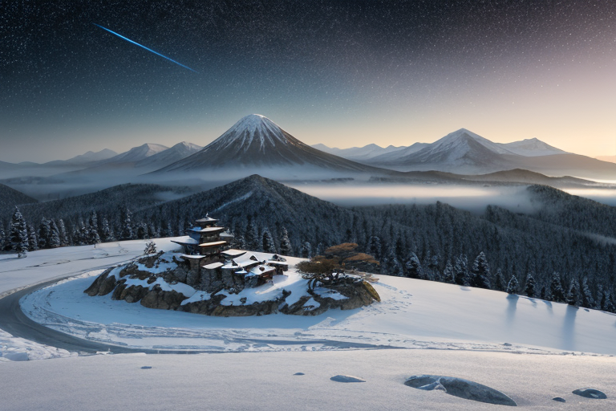
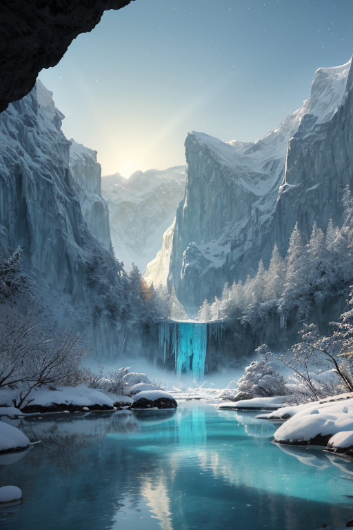
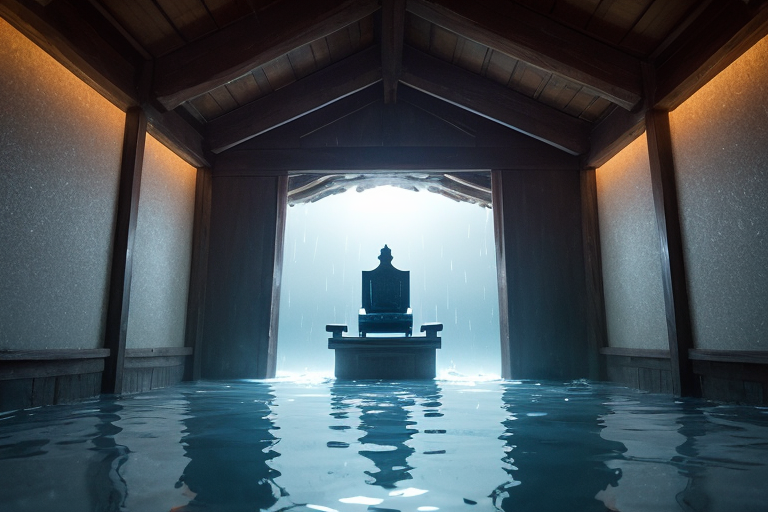
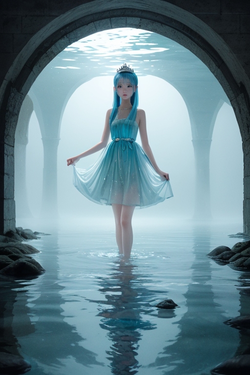
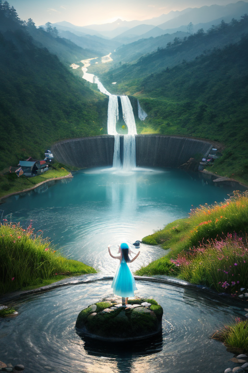

第一章 現実の富山
あなたはまだ気づいていない。この土地にも、王がいることを。
立山連峰の稜線は、朝もやの中、紙を切り抜いたように鋭く空に刻まれていた。立山信仰の聖地、室堂。ここには、山そのものが神であるという、古くからの静かな確信が満ちている。訪れる者は皆、自然と声を潜める。巨大な岩と万年雪の前では、人間の営みが小さく、儚く感じられるからだ。
その静寂の中心に、彼は立っていた。トヤマリア・アクア。透明王。その身体は周囲の空気や光を僅かに歪ませるだけで、誰の目にも映らない。彼の役目は、この巨大な地殻の「歪み」を、星から授けられた微かな力で調整すること。地震を無くすことはできない。せいぜい、岩盤の軋む力をほんの少し、ほんの一瞬、和らげることしか。
「透明であることは強さか？」
彼は自らに問いかける。感情を持たぬはずの存在が、なぜこの問いを発するのか。それは、この土地の祈りが、あまりに長く、あまりに深く続いているからかもしれない。透明であることは、誰からも気づかれず、誰からも感謝されないこと。それは、果たして…。

第二章 歪みの兆候
立山連峰の万年雪は、空気を切り裂くような透明な青を湛えていた。その雪解け水は、幾層もの地層を濾過され、黒部の峡谷を轟音と共に流下する。トヤマリア・アクアは、その水脈そのもののように、国土の基盤を流れる「歪み」を感じ取っていた。プレートが軋む、重く鈍い音。それは増幅しつつあった。
五箇山の合掌造りに宿る、数百年分の祈り。かつて北前船が富山湾にもたらした、遠い土地への想い。それら人々の感情が織りなす「祈りのエネルギー」に、今、微妙な乱れが生じている。焦りや不安という、濁りのようなものが滲み始めていた。アクエリスが伝える水脈の報告は、常に一定であったが、タテヤミアが守る雪壁の内側で、ごく僅かな「ひび」の発生を感知した。
透明である王は、一切の雑音を排し、その歪みの兆候を純粋に受け止める。気づかれないこと。評価されないこと。それらは、彼にとっては問題ではなかった。問題は、彼自身の内側に、祈りの乱れと共振するかのような、かすかな「波紋」が立とうとしていることだった。感情という名の濁りが、透明な水脈に侵入しようとしている。

第三章 王の葛藤
立山連峰の万年雪を源とする黒部の水は、常に透明であった。王はその水脈の最深部、静寂の座にて、己の内面を凝視する。タテヤミアが報告した雪壁の「ひび」。それは物理的な亀裂ではない。富山湾の深層に棲むホタルイカの、例年よりわずかに早い群遊。五箇山の合掌造りを伝う雨音の、一拍の間の空き。これら微細な不協和音の根源は、歪みそのものではなく、歪みを「感知する自分」の側にあるのではないか。
透明であることは、一切の濁りを許さない。ゆえに、侵入してくるものは排除される。感情という名の微粒子が、彼の水のような本質に混入しようとするたび、強固な濾過作用が働く。しかし、濾過の行為そのものが、かすかな抵抗を生む。祈りが、純粋な調整の祈りから、何かを「望む」という濁りを帯び始めている。彼は、透明であることの強さが、同時に、何ものをも内に留められない脆さでもあることを、初めて知った。静寂は、彼自身の心のざわめきを、これ以上なく大きく響かせていた。

第四章 妖精との対話
立山連峰の雪解け水は、黒部ダムの巨大なコンクリートに静かに蓄えられていた。その水脈の最深部、人間の耳には届かない周波数で、アクエリスが語りかける。
「王よ。あなたの祈りが揺らいでいます。水流の均衡は、水そのものの純度だけでなく、受け止める器の安定にかかっています」
トヤマリアは、自らの内側に生じた微かな濁りを、妖精の前で隠そうとはしなかった。透明であることが、これまで絶対の強さだった。感情という不純物を一切含まないからこそ、歪みを正確に測定し、微調整の祈りを捧げることができた。
「強さとは何でしょうか」アクエリスは、ダム湖を満たす無数の水滴のきらめきのように言葉を続けた。「この水も、ただ透明で冷たいだけなら、命を育むことはできません。微量の鉱物、土の気配、時には哀しみの涙が混ざることで、初めて『豊かさ』という強さを得るのです」
王は、五箇山の合掌造りに降り積もる雪を想った。雪は純白で透明に近い。しかし、あの傾斜のある屋根は、雪の重みという「負荷」を受け止め、逃がすことで、家屋という「命」を守っている。
「透明であることは、脆さではありません。あらゆるものを通過させ、自らは何も留めないという、静かな受容の強さです。あなたが今感じているざわめきも、通過する一つの流れ。それさえも否定せず、ただ見つめることが、祈りの本質です」
トヤマリアは黙った。自らの内側で渦巻く、初めての感情の粒子を、濾過せず、変質させず、ただ透明な意識で観察してみた。そこには、確かに、この列島とそこに生きるものたちへの、名付けようのない愛おしさがあった。それは不純物ではなく、祈りが形を変えた、もう一つの真実かもしれなかった。

第五章「微調整と余韻」
立山連峰の雪解け水は、黒部ダムの巨大なコンクリートを伝い、常に一定の流量で放流されていた。トヤマリアはその水脈の上に立ち、目を閉じた。彼女の意識は、富山湾の深層にまで広がる地下水脈の網の目そのものとなり、列島の歪みから生じる微細な圧力の偏りを感知する。それは音ではなく、色でもなく、純粋な「傾き」だった。
彼女は何も造らず、何も壊さない。巨大なダムの放流を百分の一秒だけ遅らせ、伏流水の経路を髪の毛一本分だけ調整する。五箇山の合掌造りを支える地盤の微振動を、家屋の固有振動と干渉しない周波数へと静かにずらす。それは、祈りに似ていた。願いではなく、あるがままを見つめ、その流れをほんの少し整える行為。
かつて感情を持たなかった彼女の内側には、今、透明な愛おしさが満ちていた。それは、北前船が運んだ交易のざわめきでも、薬売りの歩いた道筋でもなく、この土地そのものが紡ぐ静かな持続への慈しみだ。強さとは、全てを映し、なお濁らないこと。全てを受け入れ、なお自らを見失わない、透明な器であること。
彼女は雨晴海岸から富山湾を見渡し、やがて目に見えない王の星へと意識を戻した。調整は終わった。残るのは、水のように透明な、静かな余韻だけだった。
あなたの町にも、王がいる。